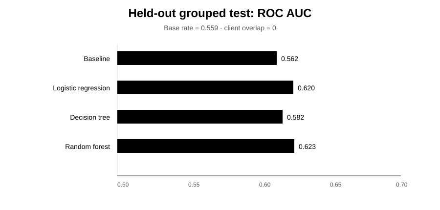

FlyRank ML Internship · CTR / Engagement Opportunity Scoring
Can a learned ranker improve the content-review queue?
A leakage-aware comparison of a transparent CTR baseline, logistic regression, a small decision tree, and a random forest on a client-grouped holdout.
0. Abstract
This study asks whether a learned ranking model can prioritize content pages that are observed as declining better than a transparent CTR baseline. The analysis uses the public-safe anonymized FlyRank internship dataset, with trend_direction == "down" as an independent proxy label and a client-grouped 70/30 holdout to prevent client overlap between training and test. Three models were compared with the Week-4 position-tier CTR baseline: logistic regression, a depth-4 decision tree, and a random forest. On the committed test run, the random forest had the strongest discrimination (ROC AUC 0.623, average precision 0.656, precision@50 0.760) versus 0.562, 0.604, and 0.720 for the refit baseline. The output is best used as a human-review queue, not as an automated SEO decision or a causal prediction of search-engine behavior.
1. Problem framing
The decision is which content pages an editor should review first for possible engagement/CTR improvement. The unit is a content page and the output is a ranked review score. A human reviews the page and search context before acting. False positives consume reviewer time; false negatives can leave a possible opportunity unreviewed.
ML is useful here because the page-level data contains multiple exposure, position, content-age, and engagement signals whose combined ranking value can be tested against a simple rule.
2. Data safety
The analysis uses the repository's anonymized content-refresh dataset, a trailing-90-day page snapshot. The target columns trend_direction and trend_pct are excluded from features. The 30-day current/previous impressions, clicks, and sessions windows are also excluded because they directly feed the observed trend and could reconstruct the label. client_id is used only for grouped validation and content_id is an identifier, not a feature.
No client-identifying details are used in this paper.
3. Baseline
The Week-4 baseline compares CTR with the median CTR expected for the page's position tier, requires at least 500 impressions over 90 days, and combines the positive CTR gap with an exposure rank. For this comparison, tier medians are fitted on training rows only before the test set is scored.
| Metric | Baseline |
|---|---|
| ROC AUC | 0.562 |
| Average precision | 0.604 |
| Precision@50 | 0.720 |
4. Model / analysis
The target is is_declining_label = (trend_direction == "down"). Features include search demand, competition, content size, 90-day exposure and traffic totals, activity days, content age, freshness, CTR, average position, engagement/scroll rates, AI-traffic share, missingness indicators, and categorical tiers.
Logistic regression provides a readable linear reference; a depth-4 decision tree tests a small human-readable rule; and a 300-tree random forest tests whether a stronger nonlinear ranker earns its complexity. All use random seed 42.
5. Evaluation
The split is a 70/30 GroupShuffleSplit by client, seed 42. The committed run has 19,166 training rows and 10,834 test rows, with 22 clients in train and 10 in test and zero client overlap.
| Method | ROC AUC | Average precision | Precision@50 |
|---|---|---|---|
| Week-4 baseline | 0.562 | 0.604 | 0.720 |
| Logistic regression | 0.620 | 0.653 | 0.700 |
| Decision tree (depth 4) | 0.582 | 0.609 | 0.680 |
| Random forest | 0.623 | 0.656 | 0.760 |

The clearest false negatives were pages with only 1–2 impressions in 90 days. This is a sparse-data failure rather than evidence that the feature set is useless. The most confident false positives included pages with very low CTR despite reasonable position and moderate exposure, illustrating that weak CTR and observed decline are related but not identical outcomes.
6. Interpretation
The random forest's leading features were avg_position (0.1096), log_impressions_90d (0.1057), days_with_impressions (0.0928), content_age_days (0.0757), and log_sessions_90d (0.0521), followed by content-size, activity, CTR, and scroll signals. No single feature dominates; the top two importances are close.
The depth-4 tree is a useful negative result. It had 16 leaves and only 14 unique predicted probabilities across the test rows, creating many ties and weakening top-50 ranking. Its simplicity did not earn enough performance to replace the baseline.
7. Recommendation
- Use the random-forest score as a review queue. It is the strongest tested ranker on the same grouped holdout.
- Keep the 500-impression volume floor. Near-zero exposure produces the clearest model failures, so abstention is preferable to false precision.
- Prioritize high-score pages with meaningful exposure. Position, impressions, activity days, content age, and sessions are strong prioritization signals.
- Require a human reason code. A score should explain why a page entered the queue, not prescribe an automatic rewrite.
Confidence: moderate for ranking within this dataset and split; low for causal or future-time claims.
8. Reproducibility
The analysis is implemented in work/notebooks/capstone.ipynb. It uses grouped 70/30 validation with seed 42 and writes model-comparison and feature-importance CSVs plus an AUC chart to work/outputs/.
pip install -r requirements.txt jupyter nbconvert --to notebook --execute work/notebooks/capstone.ipynb --output /tmp/capstone.executed.ipynb
The executed notebook is the authoritative re-run because it rebuilds the data, split, baseline, models, and metrics.
9. Acknowledgments & data credit
Built on the FlyRank ML Internship dataset. FlyRank.
Public-safe research artifact · Claims are observational and directional; no causal or Google-algorithm claims are made.